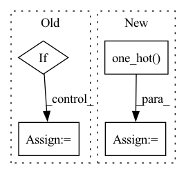

Pattern ID :27144
Before Change
w_head_q = self.transpose_for_scores(mixed_query_layer) // [btz, n_head, q_len, d_head]
w_head_k = self.transpose_for_scores(mixed_key_layer) // [btz, n_head, k_len, d_head]
w_head_v = self.transpose_for_scores(mixed_value_layer) // [btz, n_head, k_len, d_head]
if hasattr(self, "seg_embed"):
w_head_s = self.seg_embed(seg_mat) // [btz, q_len, klen, hdsz]
w_head_s = w_head_s.reshape(*w_head_s.shape[:3], self.num_attention_heads, self.attention_head_size)
r_head_k = self.r(r) // [hdsz, nhead*headsize] = [r_len, 1, nhead*headsize]
After Change
// rs_head_q = w_head_q + self.r_s_bias.unsqueeze(1)
// EF = torch.einsum("bnid,bijnd->bnij", (rs_head_q, w_head_s)) // [btz, n_head, q_len, k_len]
seg_mat = F.one_hot( seg_mat, 2) .float()
EF = torch.einsum("bnid,snd->ibns", w_head_q + self.r_s_bias.unsqueeze(1), self.seg_embed)
EF = torch.einsum("bijs,ibns->bnij", seg_mat, EF)
else:
In pattern: SUPERPATTERN
Frequency: 4
Non-data size: 4
Instances Fragment ID: 80815857
Project Name: tongjilibo/bert4torch
Commit Name: 5c1a0e0dd99a5b0164617e7e611a660816c4ae46
Time: 2022-07-17
Author: tongjilibo@163.com
File Name: bert4torch/layers.py
M Class Name: RelPartialLearnableMultiHeadAttn
N Class Name: RelPartialLearnableMultiHeadAttn
M Method Name: forward(6)
N Method Name: forward(6)
M Parent Class: MultiHeadAttentionLayer
N Parent Class: MultiHeadAttentionLayer
M File Name: bert4torch/layers.py
N File Name: bert4torch/layers.py
M Start Line: 578
M End Line: 598
N Start Line: 579
N End Line: 603
Before Change
affine_list.append(self.info_proj_linear(z_info))
if self.g_cond_mtd != "W/O":
if shared_label is None:
shared_label = self.shared(label)
affine_list.append(shared_label)
if len(affine_list) > 0:
affines = torch.cat(affine_list, 1)After Change
def forward(self, z, label, shared_label=None, eval=False):
affine_list = []
if self.g_cond_mtd != "W/O":
label = F.one_hot( label, num_classes=self.num_classes) .to(torch.float32)
with torch.cuda.amp.autocast() if self.mixed_precision and not eval else misc.dummy_context_mgr() as mp:
if self.MODEL.info_type != "N/A":
if self.g_info_injection == "concat": Fragment ID: 80815859
Project Name: postech-cvlab/pytorch-studiogan
Commit Name: 5de1fd6542062ad5f6618aa4acc0bfba4f68fcd3
Time: 2022-03-05
Author: first287@naver.com
File Name: src/models/resnet.py
M Class Name: Generator
N Class Name: Generator
M Method Name: forward(5)
N Method Name: forward(5)
M Parent Class: nn.Module
N Parent Class: nn.Module
M File Name: src/models/resnet.py
N File Name: src/models/resnet.py
M Start Line: 148
M End Line: 152
N Start Line: 139
N End Line: 151
Before Change
hidden_states = self.weight_proj(hidden_states)
hidden_states = hidden_states.view(batch_size * sequence_length * self.num_groups, -1)
if self.training:
// sample code vector probs via gumbel in differentiateable way
codevector_probs = _ipu_gumbel_softmax(hidden_states.float(), tau=gumbel_temperature, hard=True).type_as(
hidden_states
)
// compute perplexity
codevector_soft_dist = torch.softmax(
hidden_states.view(batch_size * sequence_length, self.num_groups, -1).float(), dim=-1
)
perplexity = self._compute_perplexity(codevector_soft_dist, mask_time_indices)
else:
// take argmax in non-differentiable way
// comptute hard codevector distribution (one hot)
codevector_idx = hidden_states.argmax(dim=-1)
update_values = torch.ones_like(codevector_idx.view(-1, 1), dtype=hidden_states.dtype)
codevector_probs = hidden_states.new_zeros(*hidden_states.shape).scatter_(
-1, codevector_idx.view(-1, 1), update_valuesAfter Change
hidden_states = hidden_states.view(batch_size * sequence_length * self.num_groups, -1)
codevector_idx = hidden_states.argmax(dim=-1)
hard_probs = torch.nn.functional.one_hot( codevector_idx.long(), num_classes=self.num_vars) .view(
batch_size * sequence_length, self.num_groups, -1
)
code_perplexity = self._compute_perplexity(hard_probs.float(), mask_time_indices)
soft_probs = torch.softmax(
hidden_states.view(batch_size * sequence_length, self.num_groups, -1).float(),
dim=-1,
)
prob_perplexity = self._compute_perplexity(soft_probs, mask_time_indices)
if self.training:
// sample code vector probs via gumbel in differentiateable way
codevector_probs = _ipu_gumbel_softmax(hidden_states.float(), tau=gumbel_temperature, hard=True).type_as(
hidden_states
)
else:
codevector_probs = hard_probs.type_as(hidden_states)
codevector_probs = codevector_probs.view(batch_size * sequence_length, self.num_groups, -1)
codebook = self.codevectors[0, :, :] Fragment ID: 80815861
Project Name: huggingface/optimum-graphcore
Commit Name: 2ec4ed72ea362414d20c9b112072f3aa7b3d399a
Time: 2022-07-29
Author: 91201457+thorinf@users.noreply.github.com
File Name: optimum/graphcore/models/wav2vec2/ipu_gumbel_vector_quantizer.py
M Class Name: IPUWav2Vec2GumbelVectorQuantizer
N Class Name: IPUWav2Vec2GumbelVectorQuantizer
M Method Name: forward(4)
N Method Name: forward(4)
M Parent Class: Wav2Vec2GumbelVectorQuantizer
N Parent Class: Wav2Vec2GumbelVectorQuantizer
M File Name: optimum/graphcore/models/wav2vec2/ipu_gumbel_vector_quantizer.py
N File Name: optimum/graphcore/models/wav2vec2/ipu_gumbel_vector_quantizer.py
M Start Line: 68
M End Line: 102
N Start Line: 80
N End Line: 110
Before Change
affine_list.append(self.info_proj_linear(z_info))
if self.g_cond_mtd != "W/O":
if shared_label is None:
shared_label = self.shared(label)
affine_list.append(shared_label)
if len(affine_list) > 0:
affines = torch.cat(affine_list, 1)After Change
def forward(self, z, label, shared_label=None, eval=False):
affine_list = []
if self.g_cond_mtd != "W/O":
label = F.one_hot( label, num_classes=self.num_classes) .to(torch.float32)
with torch.cuda.amp.autocast() if self.mixed_precision and not eval else misc.dummy_context_mgr() as mp:
if self.MODEL.info_type != "N/A":
if self.g_info_injection == "concat": Fragment ID: 80815860
Project Name: postech-cvlab/pytorch-studiogan
Commit Name: 5de1fd6542062ad5f6618aa4acc0bfba4f68fcd3
Time: 2022-03-05
Author: first287@naver.com
File Name: src/models/deep_conv.py
M Class Name: Generator
N Class Name: Generator
M Method Name: forward(5)
N Method Name: forward(5)
M Parent Class: nn.Module
N Parent Class: nn.Module
M File Name: src/models/deep_conv.py
N File Name: src/models/deep_conv.py
M Start Line: 107
M End Line: 111
N Start Line: 98
N End Line: 110